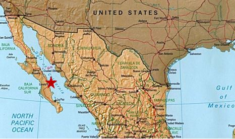

Tools Used
Initiated By
- Rare
- Comisión Nacional de Áreas Naturales Protegidas (Mexico)
Partners
- Eco-Alianza de Loreto A.C.
- Parque Nacional Bahia de Loreto
Results
- The number of fishers operating legally increased fourfold, from 20% to 80%
- The number of fishers participating in fisheries management increased from 30 to 200
- 300% increase in exclusive rights permits granted for four fisheries and nearly 75 species
- Fishers made 5-7 times more income from the sale of chocolate clams and paid for local enforcements through their profits
To learn more about the Loreto Bay Pride campaign and other Pride campaigns run by Rare:
www.rareconservation.org/article/loreto-bay-national-park-mexico
Rare's Loreto Bay Campaign for Sustainable Fisheries Management
This two-year campaign by Rare empowered local fishers in Mexico to practice sustainable fishing practices and inspired their communities to support conservation as a way of life.
Background
Rare trains local conservation leaders all over the world to change the way their communities relate to nature. Rare’s signature method is called a “Pride campaign” – so named because it inspires people to take pride in the species and habitats that make their community unique, while also introducing practical alternatives to environmentally destructive practices.
Pride campaigns are based on social marketing and utilize tactics including: audience segmentation; focus-group testing of highly targeted messages; use of multiple media vehicles and outlets to reinforce messages over a sustained period of time; and rigorous measurement of “product adoption” (i.e. new attitudes, behaviors, and sustainable alternatives).
Rare does not directly implement these Pride campaigns, and instead trains local organizations in methods for social and behavioral change and then relies on them to add an essential understanding of local culture and norms as they conduct all outreach activities. These local implementing partners are critical to both achieving and sustaining impact t the community level. Rare also partners with organizations at the national and international levels to ensure that local strategies are well-integrated with broader conservation priorities in the region.
This campaign was launched in 2009 by Rare and Perla Lozano Angulo of the Loreto Bay National Park.
Often referred to as “the world’s aquarium” for its spectacular biodiversity, the Gulf of California is home to species representing one-third of Earth’s marine mammals and samples of more than 80 percent of the aquatic mammals found in the Pacific Ocean. At its entrance sits the Loreto Bay National Park, known internationally for its 2,065 square kilometers of islands, wetlands, lagoons, mangroves, sea grass beds and marine areas which support 72 percent of all marine mammal species in Mexico.
The five island chain of Loreto Bay is a seasonal home to thousands of species including blue, fin, sperm, pilot, and humpback whales. The archipelago of Espíritu Santo, located just off the coast from the communities of Ensenada Blanca and Ligui, harbors some 1,200 species. Loreto Bay Marine Park also harbors rocky reef fish, loggerhead, black, and green sea turtles, nesting sea birds, black coral, yellowtail, dorado, groupers, and snappers.

Map courtesy mapcruzin.com
This rich collection of marine biodiversity is under siege by myriad human activities that threaten the biodiversity and economic sustainability of the region. Among the most critical challenges brought about by increasing coastal development are overfishing and unsustainable fishing practices.
Almost 12,000 people live in the municipality of Loreto. The primary economic activities are tourism, commerce, and fishing. Loreto's tourism industry caters primarily to US residents and one of the most popular tourist activities in Loreto is sport fishing.
At the time that Rare began its campaign, local fishers were overharvesting a number of economically important species (in violation of allowable-catch quotas) and illegally removing from the population juveniles and protected species.
The local community’s unsustainable fishing practices led to a decline in abundance of key market species. With fewer and fewer fish locals traveled further from their traditional fishing grounds sometimes bringing communities around the park in conflict with one another.
Setting Objectives
Perla targeted as her primary audience the fishers living in communities adjacent to Loreto Bay National Park that earned a living from the species they caught within the park. With this group she wanted to increase the adoption of sustainable fishing practices like respecting no-take zones, closed seasons, and illegal species.
Her secondary audience was the other locals within those communities who influenced the primary audience. With this group she wanted to build community awareness and support for sustainable fishing in the park.
Getting Informed
Pride campaigns use pre-campaign Knowledge, Attitude, and Practice (KAP) surveys to establish baseline data.
Having received training from Rare in how to do qualitative research with a target audience, including how to conduct interviews and carry out KAP surveys, Perla set out to establish baseline information about fishers, their habits, and their attitudes.
She asked key questions regarding their preferred methods of fishing, which species they targeted, what condition they perceived those species to be in at that time as well as historically, as well as what they knew about the allowable-catch laws that existed and how much knowledge they had about areas within the park where fishing was restricted.
Prior to Perla’s campaign, Loreto Bay National Park had adopted new guidelines to increase the size of No-Take Zones (NTZs) within the park. NTZs are areas, often spawning grounds, in which fishing is prohibited that allow for species recovery. Local fishers ultimately benefit from the ‘spillover effect’ of NTZs, wherein recovering fish populations leave the NTZ and enter local fishing grounds.
Perla learned through her baseline research that among the fishers that she surveyed 50% had never heard of an NTZ, 64% thought that most fishers rarely or never respect NTZs, and 85% had never participated in a conservation or sustainable use activity in the past. She also found that only 20% of fishers were adhering to the allowable catch laws and fishing legally.
Delivering the Program
For local fishers, Perla provided workshops with local technical experts, covering topics such as
- environmental and economic benefits of No-Take Zones designed for marine species protection and fisheries replenishment
- negative effects of overfishing
- respecting NTZs
- registering for permits
- monitoring and enforcement of the MPAs
(Vivid, Personalized, Credible, Empowering Communications)
To build community awareness and support for sustainable fishing in the park, Perla designed a variety of campaign activities under the slogan “Loretanos…for a Sea Full of Life”. These activities included: painting murals, delivering conservation-themed puppet shows, and producing games and activities for local public events and festivals. These activities focused on the negative effects of overfishing and the environmental and economic benefits of No-Take Zones. (Norm Appeals; Vivid, Personalized Communication; Word of Mouth)
Perla also worked with members of the local community to develop a full suite of communication materials including: radio ads and posters, campaign songs, bumper stickers, hats, and stickers. (Mass Media, Norm Appeals, Word of Mouth.)
The radio ads and posters featured local fishers, which served as public commitments from these fishers and strengthened norm appeal at the same time. (Obtaining a Commitment, Norm Appeals.)
One of the hallmarks of Rare’s Pride campaigns is the use of a mascot to help establish a brand identity for the campaign. Typically the mascot is one of the area’s flagship species that are threatened by the human activity being addressed. In Loreto Bay Perla and her team designed a charismatic Chocolate Clam mascot (a species for which Loreto is famous) which was used to draw attention to the campaign and promote conservation awareness at parades, schools, and events throughout the area. (Vivid, Personalized Communication)
Measuring Achievements
Perla used the same KAP survey methodology and protocols before and after the campaign to measure changes in knowledge, attitude, and practice.
Results
Outputs
- 200 tide calendars with campaign messages were distributed to fishers
- 26 murals painted; community members now ask for campaign images on their walls
- 59% of fishers informed of access rights credit their knowledge to talks with Rare’s Campaign Manager
- 300+ Loretanos were taken out into the park for the first time
- 3000 community members participated in festivals
Outcomes
- Up from 20%, 80% of fishers surveyed were operating legally as of 2012, a 60 percentage point increase
- The number of fishers participating in fisheries management (voluntary shifts to patrol the NTZ for illegal activity) increased from 30 to 200.
- 300% increase in exclusive rights permits granted for four fisheries and nearly 75 species
- 8% of the park dedicated to fish recovery zones; up from .07% in 2007
- Community knowledge about marine reserves increased by 75 percent
- Fishers made 5-7 times more income from the sale of chocolate clams and paid for local enforcement through their profits
- The value of the fishers’ catch increased. They sold 20 clams for $150 pesos, whereas they used to earn just $20 pesos.
Notes
This case study was written in 2013 by Jay Kassirer.